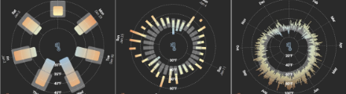
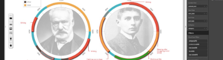
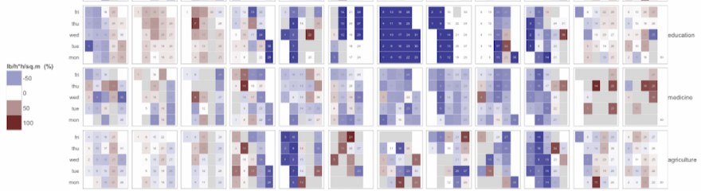
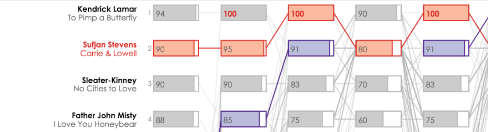

The Timeline Storyteller Custom Visual for Power BI
Microsoft Power BI YouTube Channel
youtu.be/bwiMfwBVsSQ

contact
education
PhD, Computer Science
university of british columbia
2011 - 2016
MSc, Human-Computer Interaction
university of british columbia
2009 - 2011
BComp, Cognitive Science
queen's university
2004 - 2009
employment history
Postdoctoral Researcher
microsoft research
2016 - 2019
Research Assistant
university of british columbia
2009 - 2016
Research Intern
microsoft research
2015
Research Intern
pulse energy
2013 - 2014
Research Assistant
queen's university
2009
User Experience Design /
Front-End Development Intern
emc documentum
2007 - 2008
bio
Matthew is an expert in information visualization, a practice that brings together data analysis, software development, user experience research, and design. He has spoken about his work at venues such as IEEE VIS, ACM CHI, and OpenVisConf, and he has published several papers about his work in IEEE TVCG, the top journal for visualization research. He has been a program committee member for a number of events including IEEE InfoVis, Information+, and Computation + Journalism. In 2018, he was a co-organizer of the VisInPractice event at IEEE VIS, the PacificVis Visual Data Storytelling Contest, and the MobileVis Workshop at ACM CHI.application areas
Matthew has applied his expertise in visualization and human-computer interaction in the domains of energy management, personal health, and data journalism.current role
As a postdoctoral researcher at Microsoft Research, Matthew focuses on expressive information design tools for storytelling and journalism, as well as visualization for mobile devices. His visualization work can be seen and used online and in custom visuals for Power BI. His role requires alternating between prototype design, application development, conducting experiments, analyzing data, writing research papers, and consulting with teams at Microsoft.technical skills
Matthew predominantly develops for the web (JavaScript, HTML, CSS) and uses D3.js for visualization, having previously worked with ActionScript and Processing / P5.js. He performs data analysis in R and develops data analysis tools with Shiny. He also works with business intelligence software (Power BI, Tableau), diagramming tools (OmniGraffle, Visio), and various presentation and video production tools.selected projects
Visualizing Ranges on Mobile Devices
A node.js web app used in a crowdsourced experiment.
aka.ms/ranges
2018
A node.js web app used in a crowdsourced experiment.
aka.ms/ranges
2018

Timeline Storyteller
An interactive authoring tool for Power BI and the web.
timelinestoryteller.com
2015 - 2017
An interactive authoring tool for Power BI and the web.
timelinestoryteller.com
2015 - 2017

Portfolio Sandbox
A R/Shiny dashboard for analyzing building energy usage.
mattbrehmer.shinyapps.io/PortfolioSandbox
2014
A R/Shiny dashboard for analyzing building energy usage.
mattbrehmer.shinyapps.io/PortfolioSandbox
2014

SoundConsensus
A visualization of (dis)agreement in music reviews.
mattbrehmer.github.io/SoundConsensus
2014
A visualization of (dis)agreement in music reviews.
mattbrehmer.github.io/SoundConsensus
2014

m. brehmer résumé | sept. 2018
p. 2 of 2
p. 2 of 2
selected talks / videos
A complete list of talks along with links to slides are available at mattbrehmer.github.io/#talks.
2017 / 09 / 15
What Story Does Your Timeline Tell?
OpenVisConf 2017
youtu.be/gQKUl_1ryo4
OpenVisConf 2017
youtu.be/gQKUl_1ryo4
2017 / 04 / 24
Why Visualization? Task Abstraction for Analysis and Design
Microsoft Research
youtu.be/Gg9UGHu4Qao
Microsoft Research
youtu.be/Gg9UGHu4Qao
2016 / 02 / 01
Matches, Mismatches, & Methods: Workflows for Energy Portfolio Analysis
IEEE VIS 2015, InfoVis Track
vimeo.com/236169723
IEEE VIS 2015, InfoVis Track
vimeo.com/236169723
2015 / 10 / 28
selected publications
A complete list of publications with links to PDFs are available at mattbrehmer.github.io/#pubs.
Visualizing Ranges over Time on Mobile Phones
Matthew Brehmer, Bongshin Lee, Petra Isenberg, Eun Kyoung Choe
IEEE Transactions on Visualization and Computer Graphics (Volume 25, Issue 1)
Matthew Brehmer, Bongshin Lee, Petra Isenberg, Eun Kyoung Choe
IEEE Transactions on Visualization and Computer Graphics (Volume 25, Issue 1)
2018
Timelines Revisited:
A Design Space and Considerations for Expressive Storytelling
Matthew Brehmer, Bongshin Lee, Benjamin Bach, Nathalie Riche, Tamara Munzner
IEEE Transactions on Visualization and Computer Graphics (Volume 23, Issue 9)
A Design Space and Considerations for Expressive Storytelling
Matthew Brehmer, Bongshin Lee, Benjamin Bach, Nathalie Riche, Tamara Munzner
IEEE Transactions on Visualization and Computer Graphics (Volume 23, Issue 9)
2017
Overview: The Design, Adoption, and Analysis of a Visual Document Mining Tool For Investigative Journalists
Matthew Brehmer, Stephen Ingram, Jonathan Stray, Tamara Munzner.
IEEE Transactions on Visualization and Computer Graphics (Volume 20, Issue 12)
Matthew Brehmer, Stephen Ingram, Jonathan Stray, Tamara Munzner.
IEEE Transactions on Visualization and Computer Graphics (Volume 20, Issue 12)
2014
A Multi-Level Typology of Abstract Visualization Tasks
Matthew Brehmer and Tamara Munzner
IEEE Transactions on Visualization and Computer Graphics (Volume 19, Issue 12)
Matthew Brehmer and Tamara Munzner
IEEE Transactions on Visualization and Computer Graphics (Volume 19, Issue 12)
2013
Investigating Interruptions in the Context of
Computerised Cognitive Testing for Older Adults
Matthew Brehmer, Joanna McGrenere, Charlotte Tang, Claudia Jacova
In Proceedings of the ACM CHI Conference.
Computerised Cognitive Testing for Older Adults
Matthew Brehmer, Joanna McGrenere, Charlotte Tang, Claudia Jacova
In Proceedings of the ACM CHI Conference.
2012
references
References are available upon request.